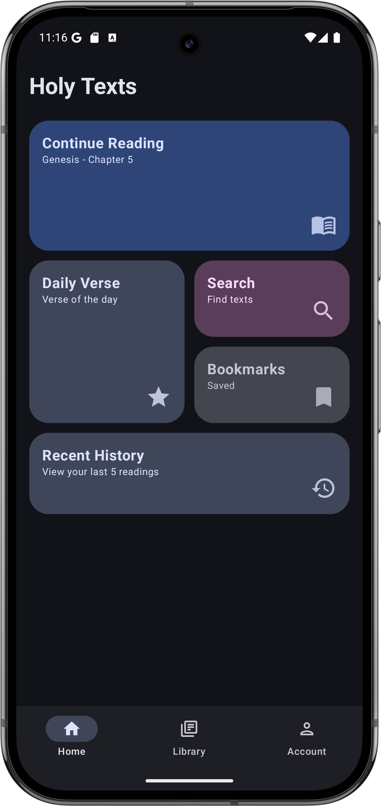
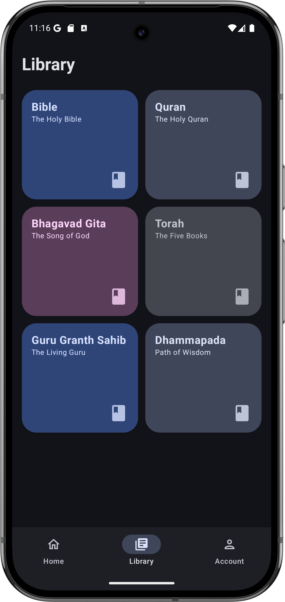
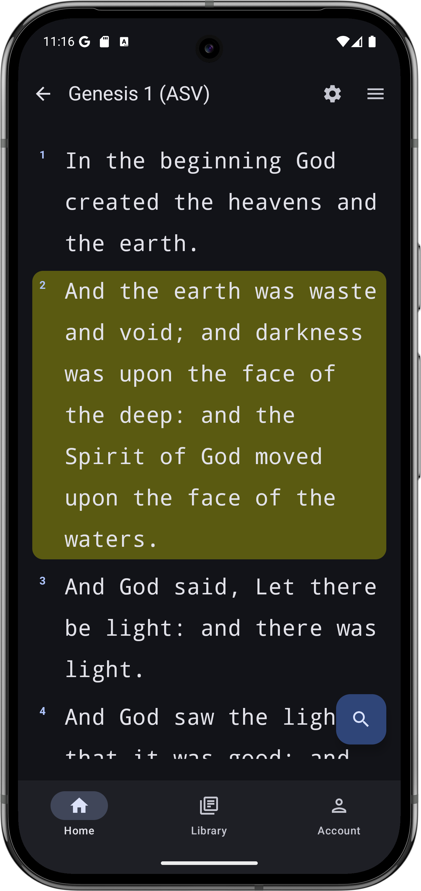
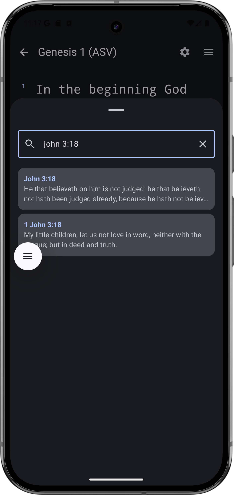
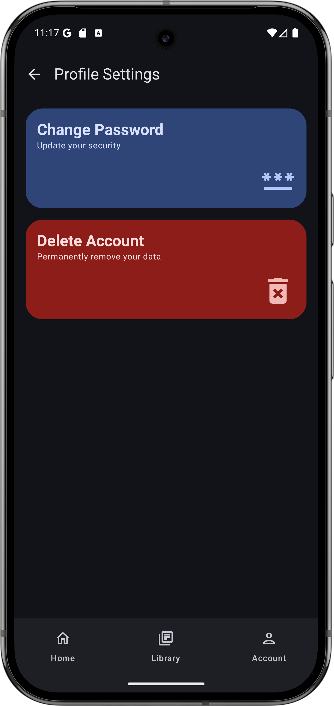
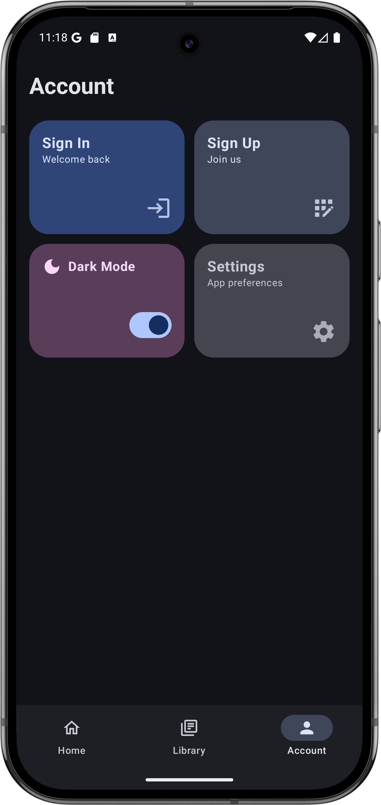
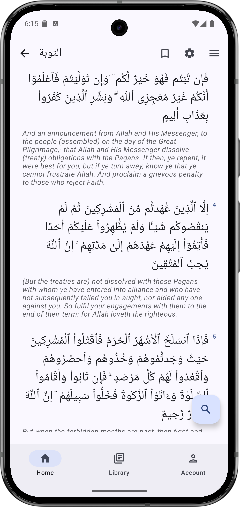
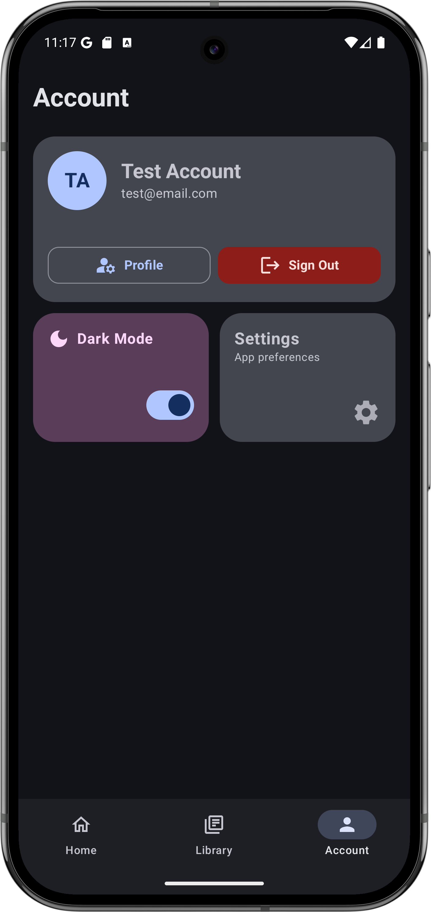

Home Dashboard
Start quickly with Continue Reading, Daily Verse, Search, Bookmarks, and Recent History cards.
Holy Texts combines practical tools and thoughtful design to support continuous study across multiple holy books.
Start quickly with Continue Reading, Daily Verse, Search, Bookmarks, and Recent History cards.
Browse Bible, Quran, Bhagavad Gita, Torah, Guru Granth Sahib, and Dhammapada in one place.
Clean verse layout with chapter controls, quick actions, and floating search access.
Search with natural references like "John 3:18" and view top verse matches instantly.
Profile settings, secure sign-in/sign-up workflows, and clear account management actions.
Comfortable nighttime reading with contrast-balanced color tokens and card surfaces.
Real app captures highlighting the home dashboard, library browsing, in-reader experience, search panel, account, and profile settings.








The UI follows a consistent card system and bottom navigation model so users always know where they are.
The product architecture supports adding texts, translations, and personalization features over time.